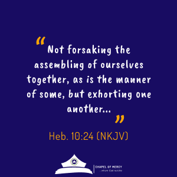

BELIEVERS CLASS
Join the class; get to grow
BELIEVERS CLASS
Join the class; get to grow
BELIEVERS CLASS
Believers Class teaches and develops church members to become well-grounded Disciples of Christ, and able workers in His vineyard. This class is for those who have just received Jesus into their lives. Receiving Jesus is the most important decision a person can ever make. It’s the beginning of a lifetime following Christ. If you happen to be one of those who have just given their lives to Jesus, the class will offer you informational directions, and you’ll also have the opportunity to build relationships with other new believers.
Our emphasis is on Water Baptism which gives each believer the opportunity to publicly share their reasons with other believers as to why they have chosen to follow Jesus. Water baptism takes place at the end of the believers class, and is by immersion in water. In the believers class, you get answers to some of the Biblical questions you may otherwise struggle to find answers to, such as: what it actually means to be a Christian; how you can put your past behind you and so on, and so forth. The class will also teach you how you can continue to grow in the Lord. You’ll learn more about our leadership and how we operate. You’ll also be given the opportunity to become a member of RCCG workforce, as well as explore the many ways to get involved in the ministry.
